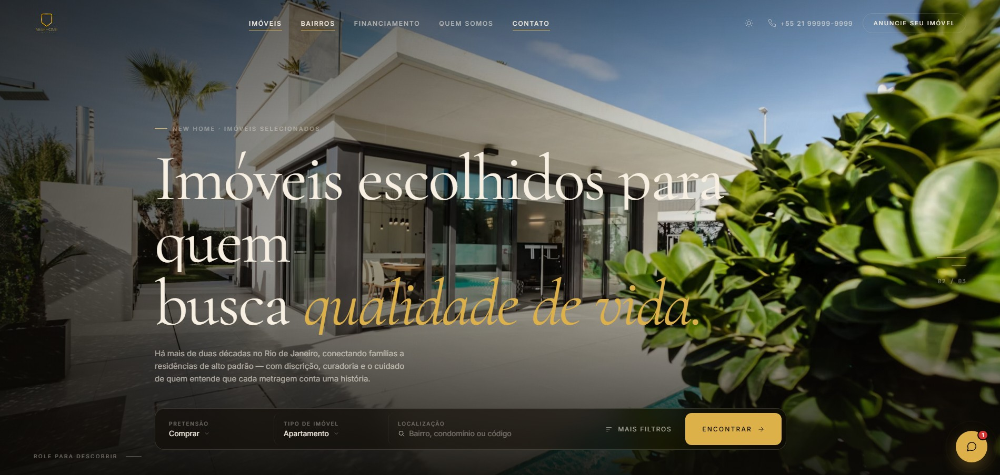

New Home Imóveis
A Portuguese-language real-estate platform connecting property discovery, listing administration, WhatsApp inquiries, and HubSpot lead tracking.

Client deliveryBuilt for a paying real-estate customer
Lead automationWhatsApp inquiries routed into HubSpot
End to endPublic experience, data, and admin workflow
The problem
The client needed more than a property brochure. Prospective buyers needed a clear discovery flow, while a non-technical team needed to manage listings, media, records, and incoming leads without maintaining separate manual processes.
What I built
- Responsive property discovery and listing-detail experiences designed for Portuguese-speaking users.
- WhatsApp-focused conversion paths with HubSpot synchronization for lead follow-up.
- A CRM-style administration workspace for listings, media, records, and lead visibility.
- Supabase-backed authentication, listing data, and database migrations.
System shape
Buyer → React property experience → WhatsApp inquiry → HubSpot
↓
Supabase data/auth
↑
Admin workspace
Engineering decisions
- Kept the public demo usable with sample properties so recruiters can explore without production credentials.
- Separated browser-safe Supabase configuration from privileged access and relied on Row Level Security for authorization.
- Designed the lead path around the client’s existing WhatsApp behavior instead of forcing a new sales habit.
Outcome
The result is a production client delivery spanning interface, data, administration, and CRM ingestion. It replaces a disconnected manual lead workflow with one traceable path from inquiry to follow-up.
What I would improve next
Add funnel analytics, automated end-to-end coverage for inquiry flows, and richer media optimization for large listing inventories.